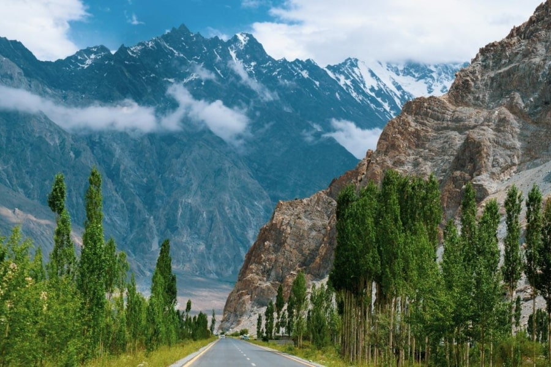
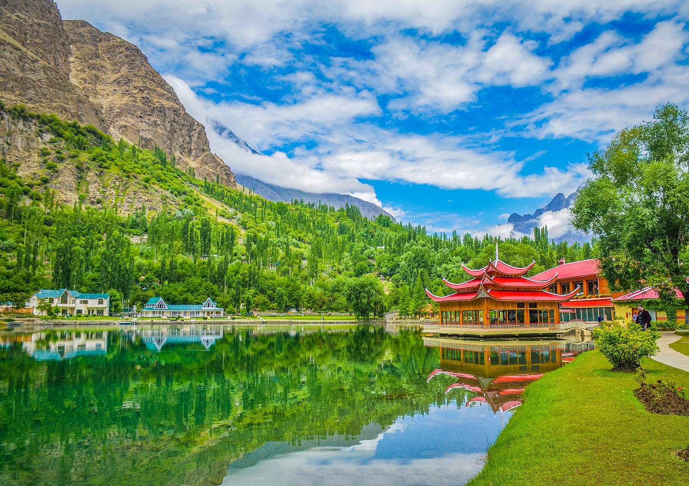
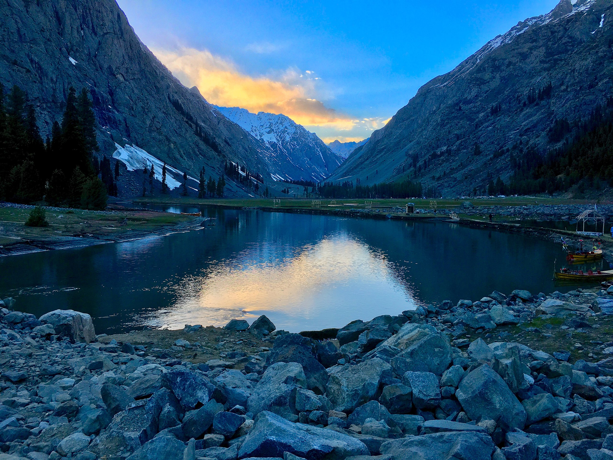
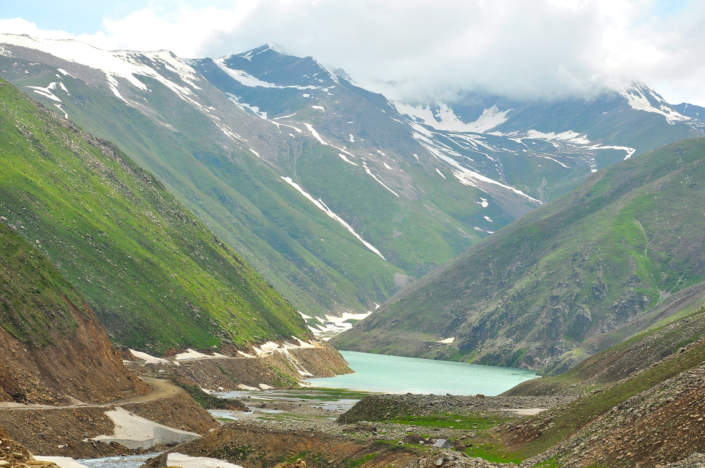

Explore Our Destinations
Gilgit-Baltistan

Hunza Valley
Summary: A picturesque valley known for its dramatic mountain scenery, ancient forts, and apricot orchards.
Attractions: Altit Fort, Baltit Fort, Attabad Lake, Passu Cones.
Best Months: April to October.
Culture: The people of Hunza are known for their hospitality and unique Burushaski language. Local cuisine features apricots, walnuts, and hearty bread.
Approx. Cost: PKR 40,000 - 80,000 per person for a 5-day trip.

Skardu
Summary: The capital of the Skardu District, it is the base for some of the world's highest peaks, including K2.
Attractions: Shangrila Resort, Upper Kachura Lake, Satpara Lake, Deosai National Park.
Best Months: June to September.
Culture: Rich Balti culture with Tibetan influences. Don't miss the local dish, Mamtu (dumplings).
Approx. Cost: PKR 50,000 - 100,000 per person for a 7-day trip.
Khyber Pakhtunkhwa

Swat Valley
Summary: Often called the "Switzerland of Pakistan," Swat offers lush green valleys, clear rivers, and a rich Buddhist history.
Attractions: Kalam Valley, Malam Jabba (for skiing), Mahodand Lake.
Best Months: May to September.
Culture: Primarily Pashtun culture. Famous for its fruit orchards and trout fish.
Approx. Cost: PKR 30,000 - 60,000 per person for a 4-day trip.

Naran ∧ Kaghan
Summary: A stunning valley famous for its alpine lakes, pine forests, and cool summer weather.
Attractions: Lake Saif-ul-Malook, Babusar Top, Lulusar Lake.
Best Months: June to August.
Culture: Local culture with a mix of Hindko and Gojri languages. A hub for domestic tourists.
Approx. Cost: PKR 25,000 - 50,000 per person for a 3-day trip.